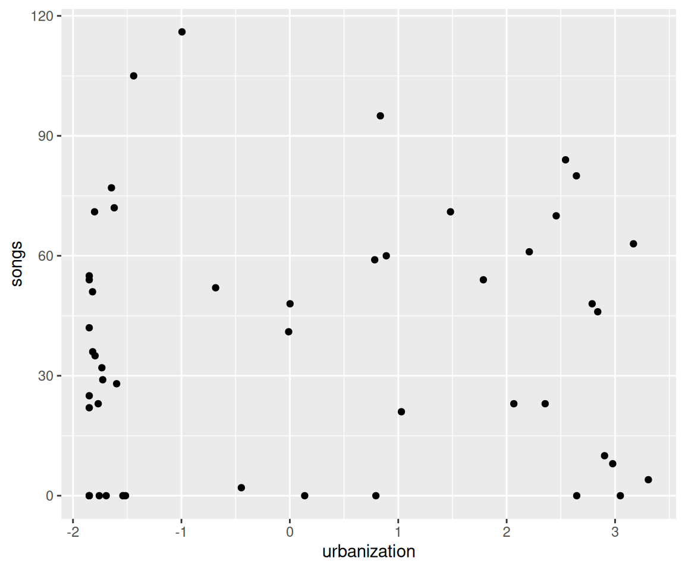
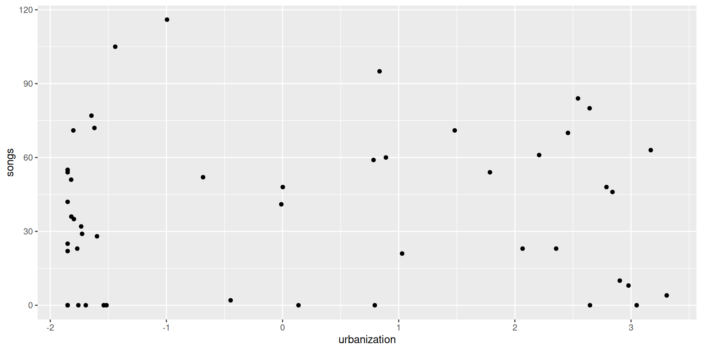

But ultimately, you need be comfortable! (and you absolutely have the right to privacy)
Interrupt me!
Generally keep yourself muted but un-mute anytime to ask questions
Ask Questions!
Group trouble-shooting is really valuable
If you have a problem, others may also (or may have it in the future)
Screen-sharing
I may ask you to share your screen with the group (feel free to decline)
For privacy, close your email etc. Or just share your RStudio window
Introductions
Me and my creatures
My garden
What about you?
Name
Background (Role, Area of study, etc.)
Familiarity with R or Programming
Creatures (furry, feathery, scaley, green or otherwise)?
Getting Started
Today we’re learning to create static HTML reports from R code (but can also create websites, pdfs, and presentations–like this one!)
Why?
Keep track of your code and results
Share your work
Ensure reproducibility
Be nice to your future self
What did I do again?
What were the results?
Did I remember to remove partial observations?
Okay, what kind of report?
For example…
## SetupThis is my **great** study.... I used these packages:```{r}library(tidyverse)```## Loading dataThese are the datasets I used```{r}my_data <-read_csv("https://raw.githubusercontent.com/steffilazerte/NRI_7350/main/data/chorus.csv")my_data```This is what it looks like```{r}#| fig-width: 6ggplot(data = my_data, aes(x = urbanization, y = songs)) +geom_point()```
Becomes…
Setup
This is my great study…. I used these packages:
library(tidyverse)
── Attaching core tidyverse packages ──────────────────────── tidyverse 2.0.0 ──
✔ dplyr 1.2.1 ✔ readr 2.2.0
✔ forcats 1.0.1 ✔ stringr 1.6.0
✔ ggplot2 4.0.3 ✔ tibble 3.3.1
✔ lubridate 1.9.5 ✔ tidyr 1.3.2
✔ purrr 1.2.2
── Conflicts ────────────────────────────────────────── tidyverse_conflicts() ──
✖ dplyr::filter() masks stats::filter()
✖ dplyr::lag() masks stats::lag()
ℹ Use the conflicted package (<http://conflicted.r-lib.org/>) to force all conflicts to become errors
ggplot(data = my_data, aes(x = urbanization, y = songs)) +geom_point()

For another example…
### Visual of Thresholds Calculations> - Pink ribbon = 99% Confidence interval of latitudes predicted from GAM> - Black lines in the ribbon are the upper and lower limit, the middleline is the predicted latitude (from GAM model)> - Transparent blue rectangles indicate the date ranges used to establishthe latitudes just after and just before migration.> - Blue horizontal lines represents the latitude threshold for spring migration (begin/end)> - Orange horzontal lines represents the latitude threshold for fall migration (begin/end)```{r}#| fig-asp: 1 #| fig-width: 15wrap_plots(g) +plot_layout(guides ="collect", nrow =1)```
(Plus a bunch of other options)
Becomes…
Wait a minute…
That doesn’t look like an R Script…
Not an R script…
## SetupThis is my **great** study.... I used these packages:```{r}library(tidyverse)```## Loading dataThese are the datasets I used```{r}my_data <-read_csv("https://raw.githubusercontent.com/steffilazerte/NRI_7350/main/data/chorus.csv")my_data```This is what it looks like```{r}#| fig-width: 6ggplot(data = my_data, aes(x = urbanization, y = songs)) +geom_point()```
Four things going on…
R code
R code fences (define code chunks)
Markdown
YAML chunk options
This is actually not an .R script…
it’s an R Markdown (.Rmd) or Quarto (.qmd) document!
Quick start
File > New Project > New/Existing Directory > Quarto Project
Click “Render” button in the top panel (Quarto)
or “Knit” button (R Markdown)
Demo
Your Turn
Using this RStudio template, add in some code from your own scripts and render it.
Keep it relatively simple for now 😉
What just happened? What are all these things? R Markdown? Markdown? Quarto? YAML 😱
Terminology
R & RStudio
Both are programs
R is the programming language/envrionment
RStudio is an IDE (integrated development environment) by Posit
R
RStudio
Terminology
R & Positron
Both are programs
R is the programming language/envrionment
Positron is a newer IDE (integrated development environment) by Posit
R
Positron
Terminology
Markdown
A text markup language
Files are .md
For example, the following…
### My heading**Hi!** This is in *italics*A [link](https://cran.r-project.org/) to R
R Markdown(.Rmd) and Quarto (.qmd) files are a mix of Markdown and R code
knitr is an R package which evaluates R code and returns the output as a Markdown file
Pandoc is a separate (independent) program that converts Markdown to a variety of formats
Quarto manages the pipeline
R Markdown vs. Quarto
Quarto (.qmd) is the next generation of R Markdown (.Rmd). You can still use R Markdown (it’s not going anywhere), but Quarto is much newer and more powerful.
Terminology
YAML, HTML, CSS/SCSS
YAML is a language for specifying (meta)data
Used for specifying document options/configuration and chunk options
HTML is a language for making websites
Can be used directly in .qmd/.Rmd files if you plan to output to HTML
E.g., can use <br\> for a line break
CSS is a language for styling websites
Can be used to apply custom styles to documents
SCSS is CSS with superpowers
Some options
Document level options - YAML block
---title:"My great analysis"format: htmldate: todaytoc:truecode-fold:true---
date: today to include today’s date
toc: true to include a table of contents
code-fold: true to hide code (with option to show)
Note: These are Quarto options! R Markdown has similar ones, but they may be slightly different. E.g., format: html_document in R Markdown.
Some options
Chunk level options - YAML notation
```{r}#| fig-width: 10#| fig-asp: 0.5#| fig-alt: |#| A scatterplot in black and white showing degree of #| urbanization on the x-axis and number of songs on #| the y-axis with no appreciable pattern in the data.#| fig-cap: |#| The relationship between urbanization and the number#| of songs in mountain chickadee dawn choruses.ggplot(data = my_data, aes(x = urbanization, y = songs)) +geom_point()```
fig-width width of figure in inches
fig-asp aspect of the figure (1 = square) (i.e. height = width * aspect)
fig-altAlternative text for screen readers helping those who can’t see the figure (should be descriptive, not the same as a caption)1
fig-cap Figure caption
Gives…
ggplot(data = my_data, aes(x = urbanization, y = songs)) +geom_point()

The relationship between urbanization and the number of songs in mountain chickadee dawn choruses.
Enhancing reproducibility
Create your publication figures through reports
Date your reports (my_analysis_2022-09-08.html)
Include info on packages used (because you’re going to cite them… right? RIGHT?)
devtools::session_info()
report::report_packages()
report::cite_packages()
Embed data directly (for smaller datasets) using DT package
Use the more advanced template (example.qmd) to create a reproducible report of your analysis.
Consider the options we learned
Anything you’d like to add?
Consider code-fold: true or toc: false
Some Final Thoughts
Rendering vs. Spinning
Rendering
.Rmd/.qmd
.md
HTML
Easier to write narrative
Define code
Use ```{r} and ```to define code blocks
Define options with #|
Inside a code block
Render button or quarto_render() function
Spinning
.R
.md
HTML
Easier to code
Define text
Use #' to define markdown
Define options with #|
Above a code block
Use empty #| to split code chunks
quarto_render()1 function
Rendering vs. Spinning
Rendering
## SetupThis is my **great** study.... I used these packages:```{r}library(tidyverse)```## Loading dataThese are the datasets I used```{r}my_data <-read_csv("https://raw.githubusercontent.com/steffilazerte/NRI_7350/main/data/chorus.csv")my_data```This is what it looks like```{r}#| fig-width: 6ggplot(data = my_data, aes(x = urbanization, y = songs)) +geom_point()```
#' ## Setup#' This is my **great** study.... I used these packages:library(tidyverse)#' ## Loading data#' These are the datasets I usedmy_data <-read_csv("https://raw.githubusercontent.com/steffilazerte/NRI_7350/main/data/chorus.csv")my_data#' This is what it looks like#| fig-width: 6ggplot(data = my_data, aes(x = urbanization, y = songs)) +geom_point()


![A cartoon showing two paths side-by-side. On the left is a scary spooky forest, with spiderwebs and gnarled trees, with file paths written on the branches like '~/mmm/nope.csv' and 'setwd('/haha/good/luck/')', with a scared looking cute fuzzy monster running out of it. On the right is a bright, colorful path with flowers, rainbow and sunshine, with signs saying 'here!' and 'it’s all right here!' A monster facing away from us in a backpack and walking stick is looking toward the right path. Stylized text reads 'here: find your path.'](figures/here.png)